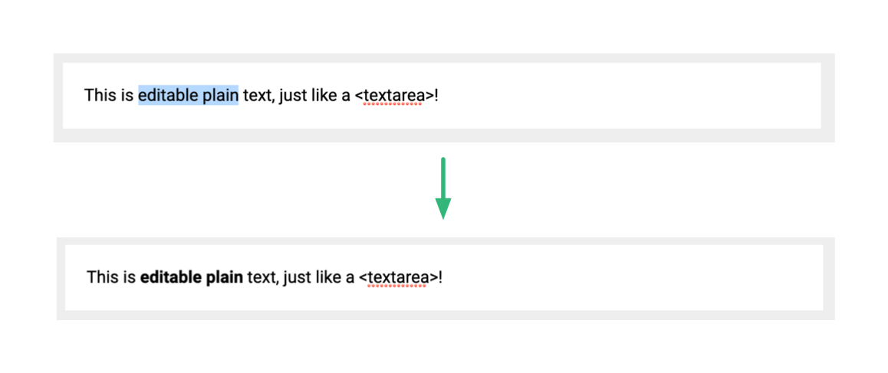

Slate.js 简介
为什么选择 Slate.js 来学习富文本编辑器呢？主要是因为：
- 它是一个「非常轻量」的解决方案：它几乎没有集成任何功能，只是提供了一个扩展机制给开发者去实现想要的功能。蝇量级的内核方便读者 “见微知著”。
- 它有一个「可以适配任何 UI」 的内核模型：大多数Slate.js 定义了一套脱离 UI 实现的数据模型，考虑到我们不是要再学习一遍 React 或者 Vue，这也能让我们让脱离 UI 的繁文缛节，聚焦到编辑器的模型设计上。
- 它为「协同编辑」所设计：因为网络条件、客户端硬件、应用架构的限制，早期的一些 Web 富文本编辑器并没有考虑到多人实时协同，Slate.js 的模型设计天然就亲和协同编辑，通过学习 Slate.js，我们也能了解到基础的多人协作文档工作原理。
我们先来看一个简单地 Slate.js 的 Demo，这个 Demo 展示了一个支持「文本加粗」的富文本编辑器：

从用户选中一段文本，并按下「加粗」的快捷键，到最后看见「加粗的文本」:

透过这个 Demo，我们不妨思考，基于视图模型相分离的架构：
- Slate.js 是怎么知道用户想要加粗文本的？
Slate.js 是怎么知道当前用户选中了哪些文本的？
Slate.js 如何根据用户意图，去刷新文档模型的？
- 新的文档模型，最终又如何渲染回视图，成为了用户所见？
- 这个过程是如何做到对多人协同友好的？
- Slate.js 又是如何保障文档中的每个元素的内容和位置都符合规则呢？
当上面的问题我们都能回答好的时候，我们也就理解了 Slate.js 是如何设计和实现的。首先，我们抛开视图层，看看 Slate.js 是如何设计内核模型的。